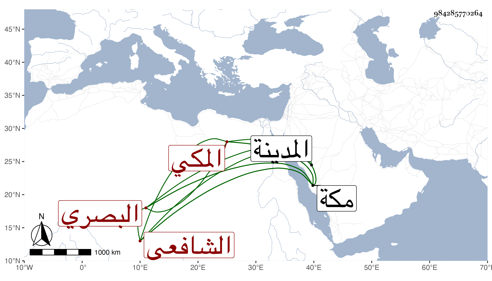

0902Sakhawi.DawLamic.ITO20230111-ara1.EIS1600.984285770264
Biography ID: 984285770264
91
محمد بن عبد العزيز بن إسمعيل بن الشيخ إبراهيم بن محمد بن أحمد الشمس ابن العز البصري الأصل المكي المولد والدار الشافعي ويعرف بالزقزق وجده إسماعيل الماضي هو أخو إبراهيم المسمى باسم أبيهما الذي هو الآن في الأحياء . ولد سنة أربع وسبعين وثمانمائة بمكة ونشأ بها فحفظ القرآن والإرشاد وبحثه عند الشيخ أحمد الخولاني ولزم الشيخ عبد الله البصري وبه عرف فقرأ عليه فرائض المنهاج ثم الأشنهية والحساب والفقه وغيرها وبه انتفع ، وقرأ على الشمس النشيلي نزيل مكة الفصول لابن الهائم وعلى السيد أصيل الدين عبد الله عقيدة التقي وعلى أحمد بن المغربي نزيل مكة ألفية ابن ملك وعلى السراج معمر بعض الألفية ونحو ثلث المنهاج الأصلي ، ولازمني في سنة ثلاث وتسعين وبعدها حتى قرأ على جميع الصحيحين وشرحي لتقريب النووي بحثا وسمع مجالس من جامع الأصول وغير ذلك ، وزار وأنا هناك المدينة ثم رجع وتزوج وكذا قرأ علي في سنة سبع وتسعين جميع ألفية العراقي بحثا وسمع علي في المرتين أشياء أثبتها له في كراسة وهو ممن يلازم درس الجمالي القاضي وكذا قرأ على السيد كمال الدين ابن صاحبنا السيد حمزة حين مجاورته فيها قطعة من الأرشاد وسمع أخرى ولازم في المطالعة على ذلك وغيره الزين عبد الغفار النطوبسي الأزهري وقرأ في أصول الدين على عبد النبي المغربي وكذا قرأ على عبد المعطي ، وهو فقير خير يقظ فاضل متفنن راغب في التحصيل حسن الفهم كثير الأدب ممن ينظم الشعر ، ومما كتبته له في المرة الثانية : اجتمع بي المشار إليه وقد ارتفع من سائر ما أثنيت به عليه بحيث صار بين فضلاء وقته كالشامة وصار في أقوم طرق الاستقامة من حرصه على لقاء الخير وتربصه لتأمل ما ينفعه في الإقامة والسير وعدم خوضه فيما لا يعنيه والندم على الوقت الذي في غير العلم يمضيه فسررت بوجود مثله وقررت ما علمته منه من عشيرته وأهله فالله تعالى يفتح عليه بما يعينه على القيام بما هو بصدده ويرجح ميزانه من فضله ومدده ، وقد أقرأ في بيت بني الخطيب الفخري أبي بكر النويري ويصحح عليه في الإرشاد ابن أبي المكارم ويقرئ في الفرائض وغيرها .
